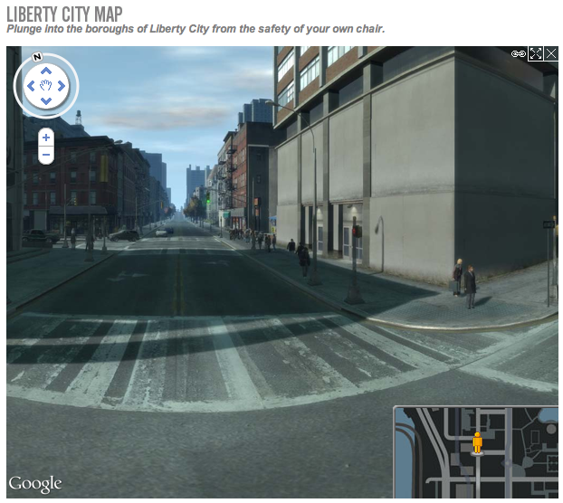
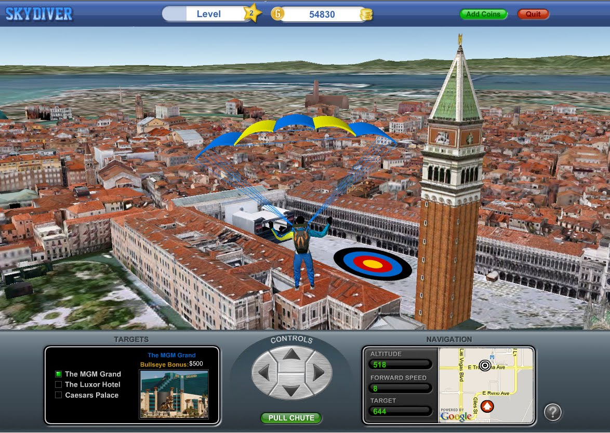

Google地图API高级应用
李双峰
2011-10-27
goo.gl/xEU71(HTML5)

Liberty City Map (Javascript API, 自定义地图和Street View) 
3D旅行游戏 (Earth API) 
<script type="text/javascript" src="http://ditu.google.cn/maps/api/js?sensor=false"> </script> <div id="map-canvas" style="width: 500px; height: 400px"></div>
var mapDiv = document.getElementById('map-canvas');
var map = new google.maps.Map(mapDiv, {
center: new google.maps.LatLng(39.989139,116.402314),
zoom: 15,
mapTypeId: google.maps.MapTypeId.ROADMAP
});

<script type="text/javascript" src="http://ditu.google.cn/maps/api/js?sensor=false&language=zh-CN&libraries=geometry,places"> </script>
var myOptions = {
mapTypeControl: true,
mapTypeControlOptions: {
style: google.maps.MapTypeControlStyle.HORIZONTAL_BAR,
position: google.maps.ControlPosition.BOTTOM
},
navigationControl: true,
navigationControlOptions: {
style: google.maps.NavigationControlStyle.ZOOM_PAN,
position: google.maps.ControlPosition.TOP_RIGHT
}, ...
}
var map = new google.maps.Map(document.getElementById("map_canvas"), myOptions);
google.maps.event.addListener(map, 'click', function() {
alert('欢迎来到GDD 2011!');
});
var panoramioLayer = new google.maps.panoramio.PanoramioLayer();
panoramioLayer.setMap(map);
anoramiLayer.setTag('鸟巢');
var shape = new google.maps.Polygon({
strokeColor: '#ff0000',
strokeOpacity: 0.8,
strokeWeight: 2,
fillColor: '#ff0000',
fillOpacity: 0.35
});
shape.setMap(map);
var control = document.createElement('DIV');
control.style.padding = '5px';
control.style.border = '1px solid #000';
control.style.backgroundColor = 'white';
control.style.cursor = 'pointer';
control.innerHTML = '快速放大'; // Zoom
control.index = 1;
google.maps.event.addDomListener(control, 'click', function() {
map.setZoom(map.getZoom() + 2);
});
map.controls[google.maps.ControlPosition.TOP_RIGHT].push(control);
var beachMarker = new google.maps.Marker({
icon: 'images/beachflag.png',
draggable:true,
animation: google.maps.Animation.DROP
...
});


var moonTypeOptions = {
getTileUrl: function(coord, zoom) {
var normalizedCoord = getNormalizedCoord(coord, zoom);
if (!normalizedCoord) { return null; }
var bound = Math.pow(2, zoom);
return "http://mw1.google.com/mw-planetary/lunar/lunarmaps_v1/clem_bw" +
"/" + zoom + "/" + normalizedCoord.x + "/" +
(bound - normalizedCoord.y - 1) + ".jpg";
},
tileSize: new google.maps.Size(256, 256),
maxZoom: 9,
minZoom: 0,
radius: 1738000,
name: "Moon"
};
var moonMapType = new google.maps.ImageMapType(moonTypeOptions);
var myOptions = {
center: myLatlng,
zoom: 1,
streetViewControl: false,
mapTypeControlOptions: {
mapTypeIds: ["moon"]
}
};
var map = new google.maps.Map(document.getElementById("map_canvas"), myOptions);
map.mapTypes.set('moon', moonMapType);
map.setMapTypeId('moon');
使用MapOptions，传入style数组; 或者创建新的地图类型 StyledMapType
var styleArray = [
{
featureType: "all",
stylers: [
{ saturation: -80 }
]
},{
featureType: "road.arterial",
elementType: "geometry",
stylers: [
{ hue: "#00ffee" },
{ saturation: 50 }
]
},{
featureType: "poi.business",
elementType: "labels",
stylers: [
{ visibility: "off" }
]
}
];
var mapOptions = {
styles: styleArray,
...
}
var nyLayer = new google.maps.KmlLayer(
'http://www.searcharoo.net/SearchKml/newyork.kml',
{suppressInfoWindows: true});
nyLayer.setMap(map);
google.maps.event.addListener(nyLayer, 'click', function(kmlEvent) {
var text = kmlEvent.featureData.description;
showInDiv(text);
});
function showInDiv(text) {
var sidediv = document.getElementById('contentWindow');
sidediv.innerHTML = text;
}
demo
http://ditu.google.cn/maps/api/staticmap? center=北京&zoom=10&size=300x300&&maptype=roadmap& markers=color:blue|label:S|故宫& markers=size:tiny|color:green|label:G|颐和园& markers=size:mid|color:red|label:C|39.989139,116.402314& sensor=false&language=zh-CN
http://ditu.google.cn/maps/api/staticmap?sensor=false&size=300x300& center=鸟巢&zoom=12&&language=zh-CN style=feature:road.local|element:geometry|hue:0x00ff00|saturation:100& style=feature:landscape|element:geometry|lightness:-100
navigator.geolocation.getCurrentPosition(function(position) {
initialLocation = new google.maps.LatLng(position.coords.latitude,position.coords.longitude);
map.setCenter(initialLocation);
}, function() {
// handle no Geolocation;
});
http://ditu.google.cn/maps/api/geocode/json?address=五道口&sensor=false&language=zh-CN
var request = {
location: new google.maps.LatLng(39.989139,116.402314),
radius: 2000
};
var places = new google.maps.places.PlacesService(map);
places.search(request, function(results, status) {
for (i = 0; i < results.length; ++i) {
var place = results[i];
var marker = new google.maps.Marker({
position: place.geometry.location,
title: place.name,
icon: place.icon,
map: map,
});
}
});
maps/api/place/search/json?location=39.989139,116.402314&radius=1000&...周围有什么？
maps/api/place/search/json?location=39.989139,116.402314&radius=1000&types=lodging&...周围有什么酒店？
maps/api/place/search/json?location=39.989139,116.402314&radius=1000&types=lodging& name=假日酒店&...周围有什么假日酒店？


http://www.google.com/crisisresponse/japanquake2011.html (map)